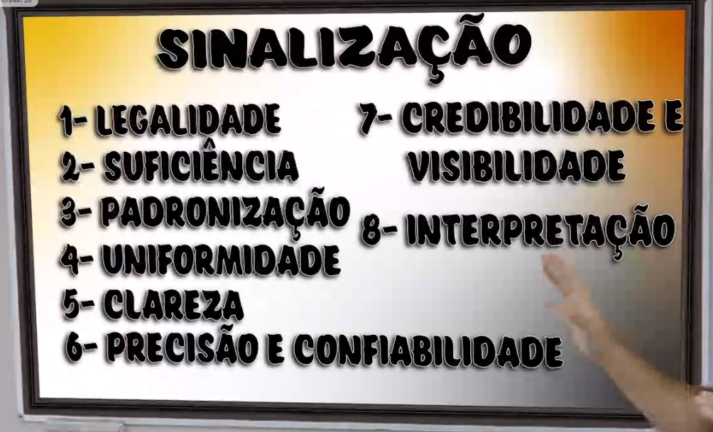

Verticais
Verticias
:
Placas
Regulamentação
:
Indicam proibição ou obrigação, únicas placas que o desreipeito a elas constituem em infração
Formatos (padrão):
Redondo, fundo branco, borda vermelha, Mensagem preta → Multa
Padrões internacional, "PARE" e "Dê a Preferência".
Sinalização de Advertência:
Formato (padrão):
Quadrada, fundo amarelo, borda preta, mensagem preta → Não multa
Indicação
Indicam locais de interesse bom como orientam quanto aos percursos, podento ter função educativa e informações sobre fiscalização
Placa de Identificação
Placa de orientação de destino ( Verde indica caminho, Azul identifica onde você está)
Placa educativa
Placa de fiscalização
Placa de serviços auxiliares ( Azul )
Placa de atrativos turisticos ( marrom e branca)